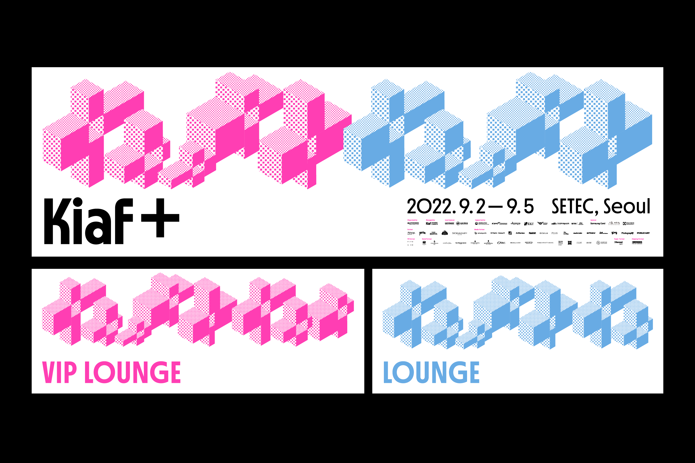
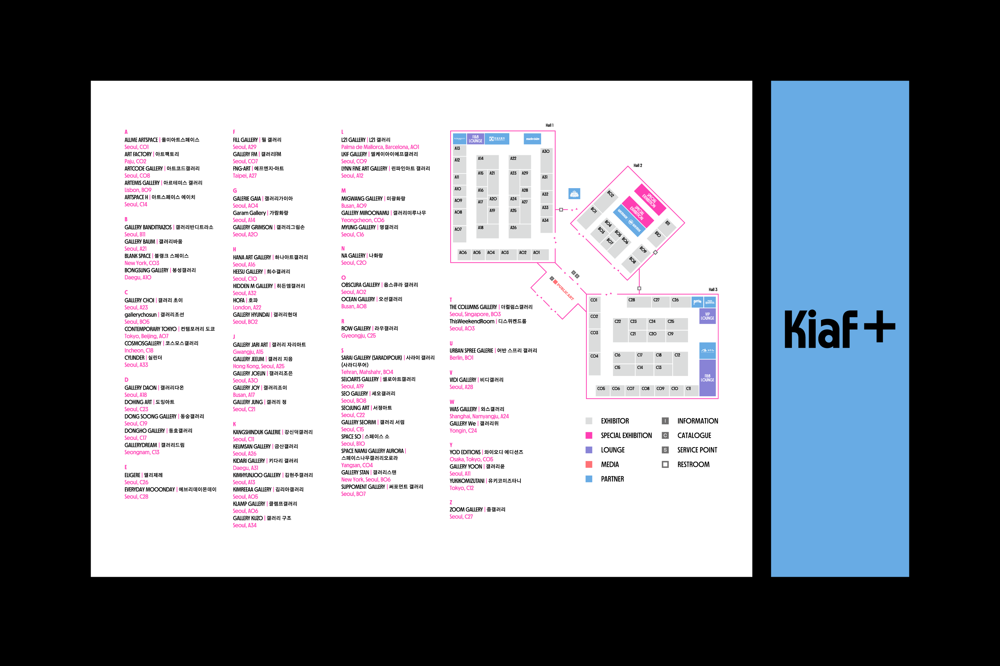
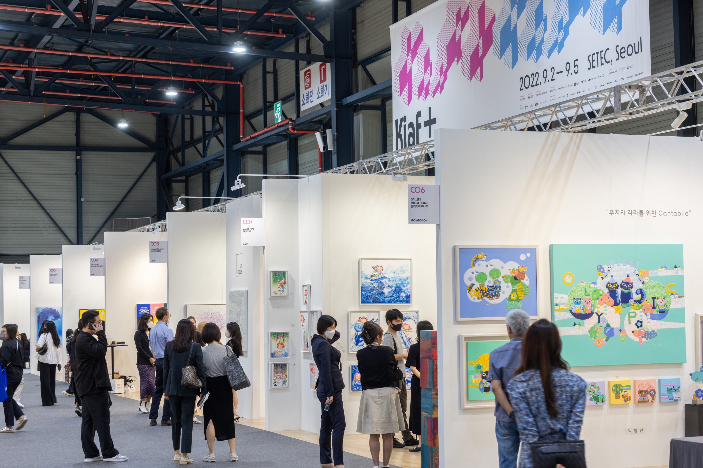

Kiaf PLUS
Exhibition Displays
Exhibition Displays
2021년 Kiaf의 visual identity 시스템을 구축한 studio fnt는 올해에도 협업을 이어갔습니다.
2022년에는 기존의 국제아트페어를 이어가는 Kiaf SEOUL과 NFT, 뉴미디어 아트 중심의 Kiaf PLUS 두 가지로 나뉘어 행사가 진행되었습니다. 올해 처음 선보인 Kiaf PLUS의 전시 identity도 studio fnt에서 새롭게 디자인했습니다.
전시장에 사용되는 배너, 가벽 및 기타 현장물 작업을 담당했습니다.
2022년에는 기존의 국제아트페어를 이어가는 Kiaf SEOUL과 NFT, 뉴미디어 아트 중심의 Kiaf PLUS 두 가지로 나뉘어 행사가 진행되었습니다. 올해 처음 선보인 Kiaf PLUS의 전시 identity도 studio fnt에서 새롭게 디자인했습니다.
전시장에 사용되는 배너, 가벽 및 기타 현장물 작업을 담당했습니다.
Related Projects
- Kiaf SEOUL 2022 Exhibition Displays
- Kiaf PLUS Exhibition Displays
- Kiaf 2022 Online, Offline ADs
- Kiaf 2021 Exhibition Displays
- Kiaf SEOUL 2022 Exhibition Displays
- Kiaf PLUS Exhibition Displays
- Kiaf 2022 Online, Offline ADs
- Kiaf 2021 Exhibition Displays
Field
Graphic
Date
Aug. 2022
Team
Worked in the sudio fnt
- Art direction: Woogyung Geel
- identity system: Hyungwon Cho, Youjeong Lee
- Catalog design: Doyeon Yang (plast)
- Graphic design: Whajin Shin, Younghyun Song
- Motion design: Ajeong Kim
- Photo: Creative Silver, courtesy of Kiaf SEOUL, studio fnt
Galleries Association of Korea
- Year: August 2022
- Art direction: Woogyung Geel
- identity system: Hyungwon Cho, Youjeong Lee
- Catalog design: Doyeon Yang (plast)
- Graphic design: Whajin Shin, Younghyun Song
- Motion design: Ajeong Kim
- Photo: Creative Silver, courtesy of Kiaf SEOUL, studio fnt
Galleries Association of Korea
- Year: August 2022
Kiaf PLUS의 외부 배너들은 SETEC과 COEX 주변 지역에 적용되어
행사의 유연하고 생동감 있는 모습을 전달했습니다.



행사의 유연하고 생동감 있는 모습을 전달했습니다.


Photo: Creative Silver, courtesy of Kiaf SEOUL
작업에 참여한 Kiaf PLUS의 이미지만을 게시했습니다.
Kiaf PLUS의 아이덴티티 및 더 많은 작업물들은 https://studiofnt.com 에서 감상이 가능합니다.
Kiaf PLUS의 아이덴티티 및 더 많은 작업물들은 https://studiofnt.com 에서 감상이 가능합니다.